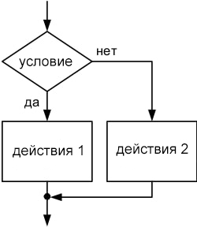

Разветвленная структура (условие)
Ветвление обеспечивает выбор одного из путей выполнения алгоритма в зависимости от результата проверки условия. Разветвленная cтруктура может быть представлена тремя различными вариантами:
Неполная форма
Если условие верно, то выполняй дествия, иначе выход из условного оператора. Используется конструкция if then
если <условие> то <действия> все
Пример
if a > b then
a := a + b;
Блок-схема

Полная форма
Если условие верно, то выполняй первый блок дествий, иначе выполняй второй блок действи. Здесь такая же конструкция, как и в неполной форме, только для выполнения второго блока действий используется оператор else
если <условие> то <действия> иначе <действия> все
Пример
if a > b then
a := a + b;
else
b := b - a;
Блок-схема
Множественный выбор
При опреации множественного выбора проверка условия может иметь более двух различных вариантов развития работы программы. Если выражение (результат) будет удовлетворять условию, то выполняются действия этого условия. Потом результат выражения сравнивается со следующим условием. Сравнение будет происходить, пока еще есть условия. В конце может присутствовать общее действие (блок действий по-умолчанию), которое будет выполнятся, если ни одно условие не выполнилось. Для этого используется case <переменная> of
переменная условие 1 действия 1 условие 2 действия 2 условие n действия n
Пример
case var of
0 : writeln('0');
1 : writeln('1');
2 : writeln('2');
3 : writeln('3');
else
writeln("var > 0
или var < 3");